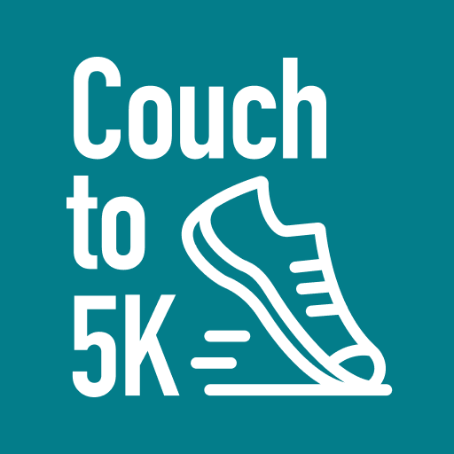
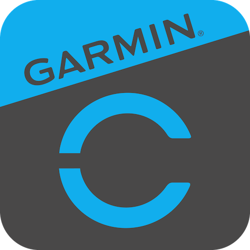

Running Applications
GPS tracking and pace analysis for runners of all levels, from beginners to marathoners.
Back to Tech & FitRunna: Running Plans & Coach
Personalized training plans and dynamic pacing guidance to help you master any distance from 5K to a marathon.
Nike Run Club
Go the distance with GPS tracking and expert-led guided runs. Join global challenges, monitor your shoe mileage, and stay motivated with audio coaching from world-class athletes and trainers.
MapmyRun
Track your runs with high-precision GPS, discover new routes, and get real-time audio coaching to improve your performance.

Couch to 5K
A beginner-friendly program that uses interval training to help you transition from walking to running a full 5K in just nine weeks.

Garmin Connect
Sync your Garmin device to track performance, monitor health metrics, and gain deep insights into your daily activity and recovery.